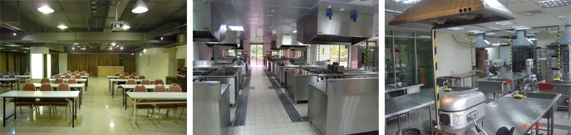
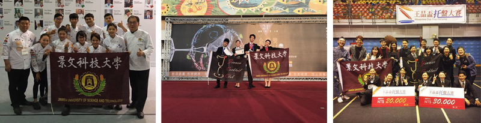
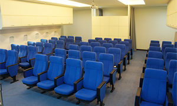
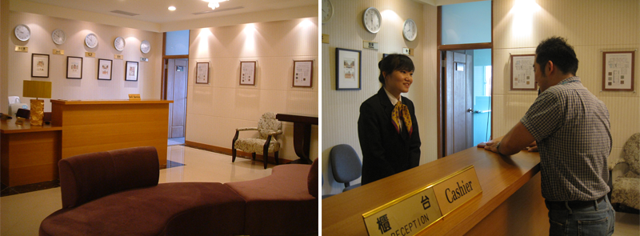

觀光餐旅學院設有「旅遊管理系觀光與餐旅管理碩士班、碩士在職專班」、「旅遊管理系」、「餐飲管理系」、「旅館管理系」等四個系所，發展特色如下:
1.整合院內資源，追求成為台灣觀光餐旅學術及研發推廣之標竿學院。
2.師資陣容堅強，兼具產學研發能力與現場的實務能力。
3.運用企業界合作的專案計畫，發展學用合一特色。
4.統整師資及設備、空間資源，推展各系所具職能特色的模組化課程。
5.注重國際化之觀光餐旅教學，除強化英語教學外，並安排學生海外參訪實習與國際活動等。
本院以配合台灣休閒餐旅觀光業之發展趨勢，培養優質觀光餐旅人才與進行研發為未來發展方向。
餐飲管理系
本系以培育餐飲專業人才為目標。注重實務操作技巧的養成，培養正確服務態度，啟發學生獨立思考的能力，並且在相關學理基礎扎根，以期學生成為具全方位餐飲專業能力的人才。本系積極鼓勵與培訓學生參與國內外專業技藝競賽，而且成果斐然。每學期皆甄選廚藝選手赴國外參加國際廚藝競賽，為校為國爭光。

專業教室

參賽佳績
旅遊管理系
本系以國際化及專業化的教育目標，培養具有專業素養的「旅遊事業服務、經營與管理人才」為宗旨，訓練同學活動企劃與解說導覽能力，致力於旅行業之經營管理服務，旅遊資源之規劃與生態旅遊及環境教育素養之養成，藉以培育具環境教育素養的旅遊專業人才。

航空專業教室
旅館管理系
本系設立的宗旨秉持著技職教育的理念，在學院的「學用合一」的經營特色之下，配合國家整體休閒服務與餐旅產業之蓬勃發展，為社會積極培育旅館專業人才，也為旅館系的學子開創寬闊的未來。

旅遊管理系觀光與餐旅管理碩士班、碩士在職專班
本觀光與餐旅管理碩士班擁有7位具博士學位專任及系所合聘教師，教師專長平均分佈於觀光、休閒、餐飲及旅館等四個領域。並將課程領域區分為「觀光休閒」與「餐飲旅館」兩個模組，使教師專長與任教課程緊密結合，發揮其特色。